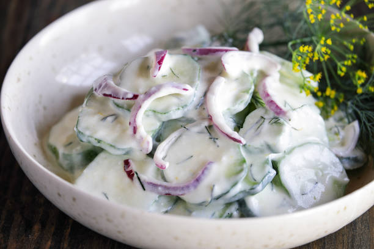

Cucumber Salad

This creamy cucumber salad with crunchy slices of cucumbers, sweet onions, garlic, and dill was my dad's recipe. It's one of our family's all-time summer favorites.
Ingredients
- 2 Large cucumbers
- 1 sweet onion
- 1 tablespoon sea salt
- dressing
- 1 1/2 cups mayonnaise
- 2 tablespoons vinegar
- 1 tablespoon white sugar
- 1 teaspoon dried dill weed
- 1 teaspoon garlic powder
- 1 teaspoon ground black pepper
Steps
- Mix cucumbers, onion, and salt together in a bowl. Cover with plastic wrap and let sit for 15 to 30 minutes.
- Turn cucumber mixture into a colander set over a bowl or in a sink. Let drain, stirring occasionally, until most of the liquid and salt has drained, 15 to 30 minutes. Transfer drained cucumber mixture to a large bowl.
- Whisk mayonnaise, vinegar, sugar, dill, garlic powder, and pepper for dressing together in a bowl until smooth. Pour over cucumber mixture and stir until coated.
- Pour over cucumber mixture and stir until coated.
- Cover with plastic wrap and refrigerate for 1 to 2 hours before serving. Cover with plastic wrap and refrigerate for 1 to 2 hours before serving.
- Enjoy!
Back to Home